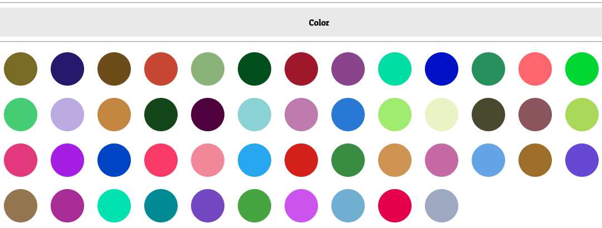

Color Generator
This is a project I carried out a couple years ago inorder to acquaint myself with jQuery and general coding concept. It is a super simple program, but I thought sharing this might help me either get some feedback or, hopefully, inspire and amuze some of you.
Year: 2012 - 2015
Client: Personal project
